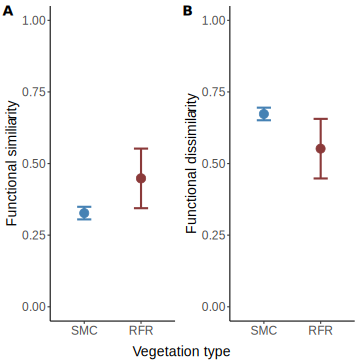

Applications
Applying Food Web Metrics

Metrics that quantify entire communities can provide useful information to track, manage and promote a system’s health, and its ability to be resistant in the face of disturbance and threats associated with climate change.
Are two wildlife communities in the Lake Tahoe basin different?
Two main forest types in the Lake Tahoe basin (A) are Sierran mixed conifer (B) and red fir (C) forests. These two forests differ in species composition, historic fire regimes, elevational range, and life zone (e.g., climate). Sierran mixed conifer forest is the most widespread forest type in the basin, is characterized as a dynamic system (high productivity and dispersal), and a historically short fire rotation. Red fir forest is considered to be a static system (low energy system, often above snow line) and it has a historically moderate fire rotation. The contrasting productivity and disturbance regimes of the systems could be critical to their futures as regional climate changes.

Constructing food webs of two forest wildlife communities that we know well has two goals: (1) validate our metrics, do metrics match our understanding of the system? Are we able to create metrics that measure the system holistically. (2) Depending on if metrics are similar or differ, this can help us understand/predict how these systems respond to disturbances.
Community composition
Species (A) and guild richness (B - functional groups) are higher in Sierran mixed conifer forests compared to red fir forests1. However, just because red fir forest is less biodiverse (less species & guild richness), doesn’t mean it’s less valuable, they are different.
The two forest types occur in different life zones and support some different species. For example, Clark’s nutcrackers are important seed dispersers of conifers, and they are found in higher elevation red fir forests. While Sierran mixed conifer forests are home stripped and spotted skunks, who are mesocarnivores, which can be important in maintaining food web stability.

Community strucutre and function
Functional similarity is generally higher in red fir forests compared to Sierran mixed conifer forests (A) and the opposite is true for functional dissimilarity (B2).
This suggests that because species generally perform more similar functions, that red fir forests will be more stable (able to maintain function) in the face of random species loss. Conversely, functional dissimilarity is higher in Sierran mixed conifer suggesting that the diversity of functions is higher in that community.

While similar, on average maximum chain length (calculated as the mean guild maximum chain length (mcl)) is higher in Sierran mixed conifer compared to red fir forest3.
This difference suggests that SMC may be less resilient to the loss of top (apex) predators compared to red fir forests.

Modularity is similar and generally high for both forest types4.
High modularity (a high number of subcommunities) can be good because it means that if a random species is lost, then their loss will be less likely to have cascading impacts on the rest of the community. However, high modularity can also occur when there has been a simplification of the system - such as the loss of top predators. This is the case for the central sierras, where predators including grizzly bears, wolves, and wolverines went extinct when westward expansion by pioneers occurred in the late 1800s and early 1900s.
Future applications
Structure vs composition: Evaluating how communities (composition) vary based on structure (canopy density and age) will be important for communicating to managers how best to manage for dynamic landscapes.
Landscape scenarios: Scenarios are a useful tool to simulate how different management scenarios will impact future landscape composition. Evaluating how communities are impacted by different types of management will be critical to understand how decisions now can support resilient wildlife communities into the future.
:::
Footnotes
Figure on right shows mean values (circles) with standard deviation (error bars) produced from 1000 simulations of species level networks for a Sierran mixed conifer forest, mid seral stage, moderate canopy cover at 1900 m of elevation (blue), and a red fir forest, mid seral stage, moderate canopy cover at 2150 m elevation (red).↩︎
Figure shows mean values (circles) with standard deviation (error bars) produced from 1000 simulations of species level networks for a Sierran mixed conifer forest, mid seral stage, moderate canopy cover at 1900 m of elevation (blue), and a red fir forest, mid seral stage, moderate canopy cover at 2150 m elevation (red).↩︎
Figure on the right shows, for consumer guilds, the mean guild values (dots) and boxplot produced from 1000 simulations of species level networks for a Sierran mixed conifer forest, mid seral stage, moderate canopy cover at 1900 m of elevation (blue), and a red fir forest, mid seral stage, moderate canopy cover at 2150 m elevation (red).↩︎
Figure shows mean values (circles) with standard deviation (error bars) produced from 1000 simulations of species level networks for a Sierran mixed conifer forest, mid seral stage, moderate canopy cover at 1900 m of elevation (blue), and a red fir forest, mid seral stage, moderate canopy cover at 2150 m elevation (red).↩︎